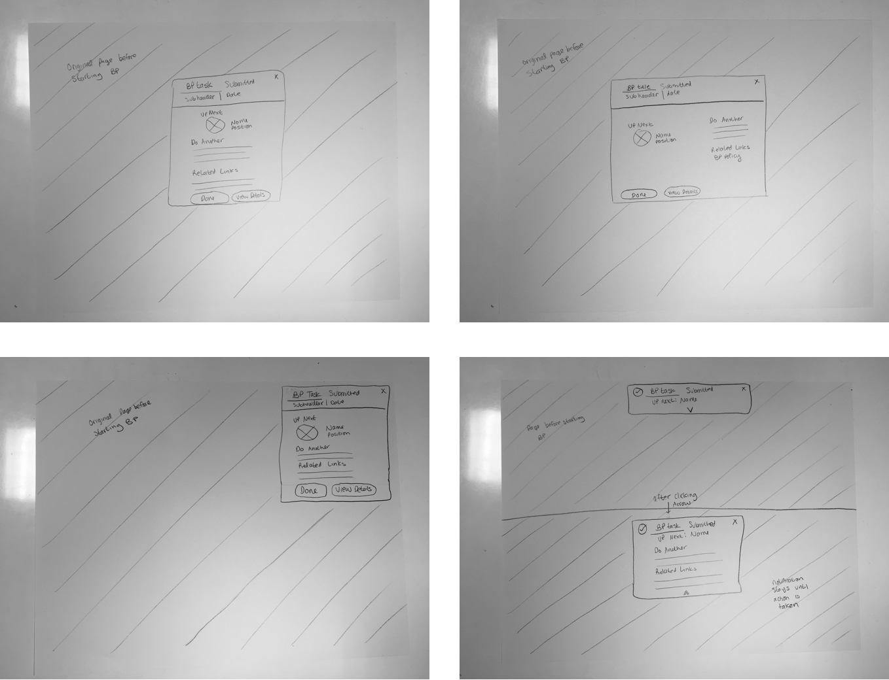

This project originated from within Workday’s design org and was not actually brought up by the users. Our PMs and designers felt that the global conclusion page needed improvement. My role was to research into this and redesign a “lighter” conclusion interface which works with Workday’s 50,000 business and non-business process tasks.
Original Design


Initial concerns:
- The page felt too “heavy”- do we really need a full page & make the user perform an extra click?
- Possible low confidence in task completion
- Too much white space- the links and information are too spread apart
Our Dublin, Ireland team actually sent a quickfix design to development for the recruitment use case right before I started my internship.
- Recruiters are a subset of users who go through dozens of business process (BP) applications a day.
- They wanted a lighter conclusion page, like a notification, to save more time.
- Their design had issues with accessibility users since the notification disappears over time and hadn’t been tested the rest of Workday’s tasks.
Dublin's Solution
My job was to work backwards from this specific use case and broaden their design to fit the requirements of multiple use cases.
Initial specifications defined by my PM:
- User must feel confident that they’ve successfully submitted something.
- User must feel comfortable with the user flow (navigation/what pages come next).
- (Possibly) reduce the number of clicks to complete a task.
Since this is a design systems project, my first approach was to find quantitative data on user tendencies on the conclusion pages. Some questions I had:
- How long did users stay on the conclusion page?
- Did users use the related links on the right hand side?
- What do users usually click on this page?
- Where do users navigate to after finishing a BP?
- How many tasks do users typically complete in one sitting?
- Do they expand Details & Process? Is this task specific?
Unfortunately, the data science department hadn’t set up the infrastructure to measure data on the conclusion page.
My next option was to send out a survey to see how designers and PMs of different Workday BPs see the conclusion page being used. It consisted of open ended questions like: How could the current conclusion interface be improved? I had 17 responses and here are some findings:
Survey Data

Note: Although Workday employees also use Workday for HR management, I had to carefully weigh their input. They are categorized as experts who have a different experience from the average user because they are constantly working on the product. I will go over usability testing with real users later on.
Interns had limited resources when it came to contacting actual users so I had to pair up with designers from different apps teams and walk through the tasks that they owned in. This was the cheapest way to get more details about the user flows.
User Flows

After showing my research to my PM, we decided that the initial design should follow these specifications:
- Bring the content closer together
- Have more visual indicators for success
- Show context as to what page will be shown when the user clicks “Done”
- Have multiple versions (toast notification, modal)
Paper Sketches
Lofi Digitization


I brought the designs into office hours to get feedback from the creative directors:
- They liked the modal version the most because it gave context to the page that would appear after clicking “Done”
- I received advice on justments of content alignment to follow Workday’s design system
- I needed to design for specific edge cases where users have to complete a related task right after finishing the BP
My team suggested that I run usability tests on 3 variations of the design: full, toast, and modal on several different BPs. Data science was able to provide the top used tasks on the platform. The PM and I then categorized them as easy, medium, and difficult:
-
Easy:
Low effort/investment to complete. A user can easily go
back and change errors without affecting other users.
The top used task in this category was: Create an Expense Report. -
Medium:
Multiple users are involved and user is inclined to pay
more attention to the details.
The top used task in the category was: Change Job. -
Difficult:
Task is a business transaction involving multiple
parties and user needs to pay special attention to the details.
The top used task in the category was: Create a Supplier Invoice.
Versions to test

I tested 15 users and the testing script can be found here. For each of the above tasks, I tested all three conclusion interfaces (full, modal and slim) in random order. Goals:
- Test the validity of the prior research and concerns pointed out by Workday employees.
- What actions do users typically take when shown a conclusion page?
- What content is important/not important on the conclusion page?
Original Design
Findings for current full paged design:
- First time users thought this was an error page because of all the white space
- Users look at the center (Details and Process) first, not the header on the left hand side
- Almost every user prefered the Details and Process tab to be expanded. Default: not enough information, but expanding Details & Process: too much information
- Empty fields, case #, overall process contained information that users didn’t know what to do with or cared about
- Low confidence in task completion led users to not click Do Another. Instead, they’d rather click Done and manually do another on the page they’re directed to. Users didn’t feel like the task was complete until they clicked “Done”
- Users wanted more visual indicators to show task completion
- Users wanted a high level summary of what to expect next (i.e. estimate time for submission to finish processing, how many people need to approve the task and who to contact if something were to happen)
Colored Modal

Findings for modal design:
- Faster response time- users may have absorbed the details faster because the content was condensed.
- Navigation confusion- users expected the modal to pop up on current page instead of redirecting to a new page and appearing.
- “I always know that my manager is up next to approve it”- users thought it was redundant and wanted more details on the entire approval chain instead of the direct approver.
- Some felt increased confidence of task completion because the “Up Next” picture indicated that they’re done with their task
- Users wanted more visual indicators for success (like a green check mark)
- Users wanted instructions on how to revisit the confirmation after clicking Done
Colored Slim


Findings for slim design:
- Users said that they only clicked on it to expand because it was their first time- they probably wouldn’t if they got used to the interface
- Users wanted more visual indicators for success
- Users felt that the notification should stay there until an action is taken (rather than time based)
- Users prefer the version of the slim conclusion with submission details over who’s up next for the sub header
General Findings:
- Slim and modal version performed better than the full conclusion for easy and medium difficulty tasks
- Difficult task users wanted confirmation details
- The number of people who preferred the slim vs. modal was about equal for all tasks
- Feedback after Dublin sync up: HR professionals tend to look at the 'details and process' section of conclusion pages, as it's important for them to see who's up next in the approval chain. Not only who's directly up next, but who's after that person and maybe even a third approver.
Seeing that there was no preference over the slim versus the modal design, I took the feedback and created a hybrid design:
- Integrated a business process chain to give more context on the following steps
- Increased salience of completion indicators
- Put some context on where the confirmation could be found (always sent to the archived mailbox)
- An advantage of this design over the pure modal was that it saves a click
- Designed the notification expand on hover to speed up the perception of the interaction
- Removed Do Another and Related Links because prior users didn’t use it.
- Technically, users can still do another or complete related tasks because the notification pops up on the page before starting the business process
Hyrbid Prototype
I tested on 10 different users and the testing script is linked here. I tested both the hybrid design and the full paged conclusion design. My goal was to measure the validity of the new design and provide further research for the designer who would take up this project after my internship was over.
Findings for current full paged design:
- Similar results to the first round of testing- users weren’t confident of task completion and prefered more details on what was just submitted
- Users wanted the details and action buttons to be closer together. It took them a while to scan the page and absorb all of the information
Findings for hybrid design:
- Faster task completion time
- Expense Report user's didn't care about BP chain, Change Job users did
- Status of submission and a brief summary of submission remains as the top two factors of a conclusion page
General Notes:
- 8 users prefered the hybrid design and 2 prefered the original full design
- The two that prefered the full design have never used Workday before (new hires)
Unfortunately, my internship came to an end before I could test this design on more use cases. This was a lengthy and difficult project because there are over 50,000 different BPs, none of which are categorized.
I could only leave Workday a few definitive suggestions based off of my learnings in this project:
- One conclusion page design will probably not work with all of the edge cases- it may be a better idea to list multiple designs on the design system and have specific teams choose the design that most fit their users.
- The hybrid design seems to perform well with easy & medium tasks but there are still many use cases that haven’t been tested so the validity of the results could be skewed
Recommendations for current Slim Conclusion design by Recruiting
- The design should stay on the screen until an action is taken to account for accessibility users. Many users also prefered it this way.
- The design should be clickable to view more details on what was just submitted.
- The design needs green visual indicators to improve confidence in task completion
- It may be useful to make “Up Next” clickable: if user clicks it, it’ll show more details about the entire BP chain
Recommendations for the current full conclusion page design:
- Details and Process should be expanded already
- “Submission Successful” should be in the middle of the page rather than the top left header
- The design needs green visual indicators to improve confidence in task completion
- There is confusion in the meaning behind “Up Next.” Some users suggested “Submitted to...”
- “Done” button should be a different word. Some users suggested “Close”
Overall, my internship at Workday gave me a priceless experience. I learned that not everything is straightforward as school projects and that it’s essential to make designs scalable. It’s totally possible that there may not be a single design that solves the problem at hand. I also learned a lot about how difficult it is to make changes to an enormous design system because it could cause unexpected effects to different use cases. I’m thankful for all of my teammates walking me through the complexities of designing in a larger organization.
While I was redesigning the conclusion page, I also worked on mobile animations with Framer.js.
View Case Study

EventQR
A web app that lets users create & scan events encrypted into a QR code, which can be synced onto their Google Calendar.
View Case Study
Birch Aquarium
Designing an exhibit in the Birch Aquarium at the Scripps Institution of Oceanography to teach people about bubbles.
View Case Study